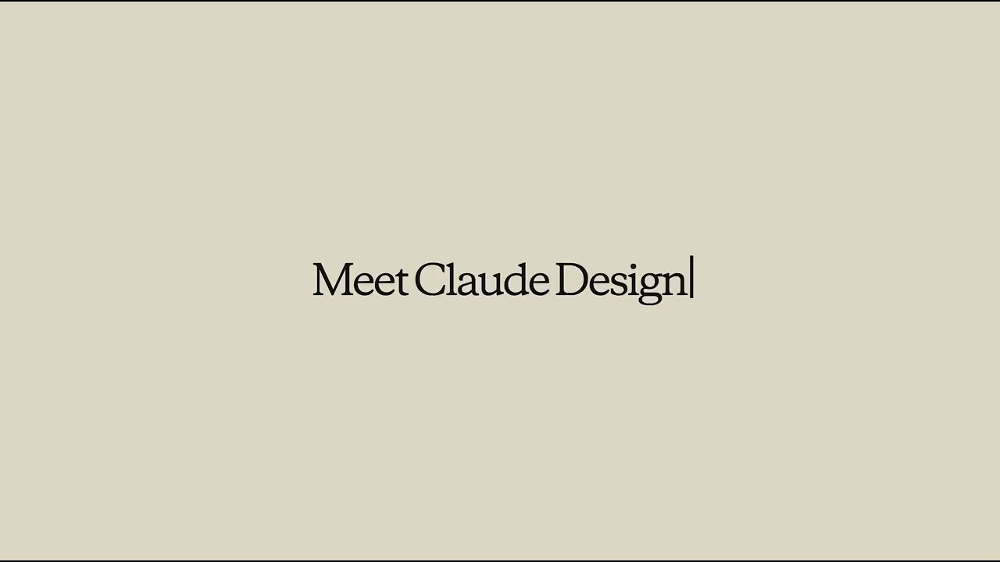
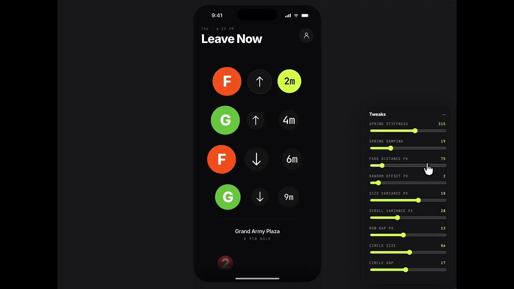
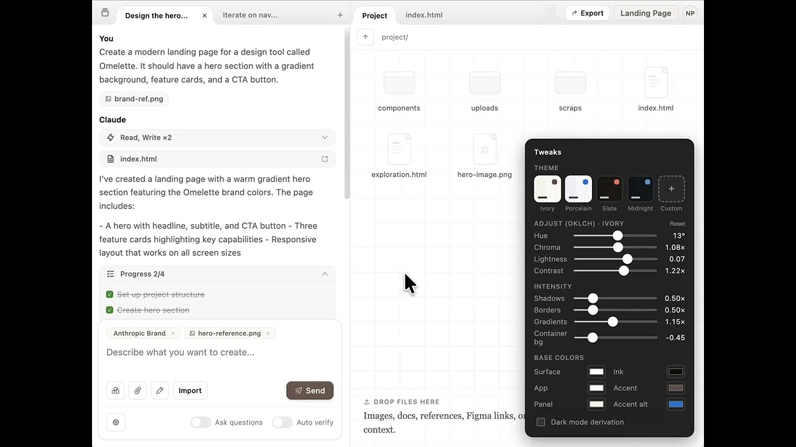
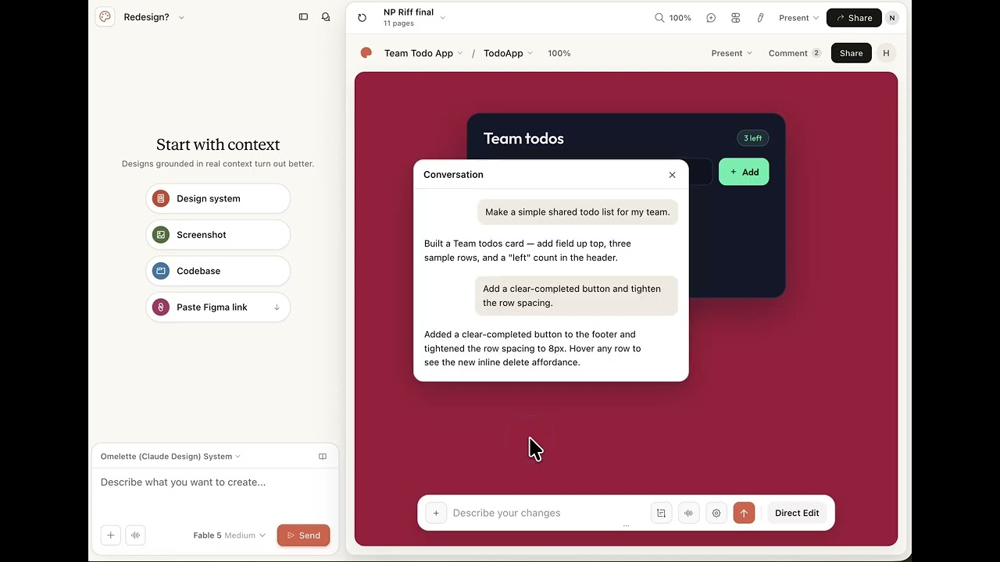

中文全文译文：由「译文工坊」根据英文原文自动翻译生成，供学习参考。结构与措辞以译文为准；想看原始论述，请点上方「阅读原文」。
Anthropic 产品设计师 Nate Parrott 分享了他如何使用 Claude Design（测试版），在早期就探索、迭代并分享视觉想法，涵盖从产品原型到幻灯片和动画的各类内容。
2025 年秋天，我是 Claude Code for VS Code 项目中唯一的产品设计师，与两位工程师一起，为 Claude Code 的全部能力重新设计一个终端之外的友好界面。我们在九月底发布了测试版，十一月 Opus 4.5 问世，Claude Code 团队随即开始高速、激进地发布。工程师们的产出远超以往，而我仍然保持着一贯的交付节奏。我必须想办法追上。
Claude Code 运行在终端里，一切都基于文本，我最初也是这么处理的：把输出复制给 Claude，附上截图，然后问：“这是我们想添加的功能，你来设计一下怎么样？”结果并不理想。之后一个月左右，我把它当作业余项目，一直在寻找改进 Claude 设计产出的办法。
给 Claude 一个 HTML 试验场
最终我偶然找到了答案：Claude 非常擅长 HTML。我们通常把 HTML 看作网站的格式，但它同样是一种丰富的、可交互的视觉媒介：幻灯片、视频文件或 PDF 里能做的东西，网页里都能做。于是我用提示词让 Claude 生成 HTML，并给它配了一个分栏界面：左边聊天，右边查看输出。
这很有用，但产品设计靠的是对所做产品与品牌的了解，所以下一步，我花了一段时间，把 Anthropic 品牌的精髓（我们产品使用的字体、颜色、素材和原则）提炼进提示词。这样，当我在工具里输入提示词时，输出就会符合 Anthropic 的品牌规范。
我把这些做成一个小型内部原型，分享给了团队。产品设计师们立刻用它来做交互原型。在传统设计工具里制作可点击原型，需要为每个页面的每种状态制作视觉稿，再手动把它们串联起来。而在这里，你只需把素材交给 Claude，说一句：让它能跑起来。它交付的每个产物都有一个链接，可以像分享文档一样分享出去。
Claude Design 如何成为视觉工作的媒介
我第一次意识到 Claude Design 有多出色，是在 Anthropic Labs 团队的一次异地会议上，当时有一场创意提案环节：在场每个人都用它拼出了幻灯片，很多人就是在会议中途、轮到自己上台之前临时做出来的。那次会议让 Labs 团队决定为它配备人手，Claude Design 也由此从一个业余项目变成了正式项目。
我们不再把它称作做产品视觉稿的工具。Claude Design 已经成为制作各类视觉沟通内容的工具：幻灯片、落地页、可打印成 PDF 的单页文档、邮件、动画，以及用于社交媒体分享的视觉素材。幻灯片成了人们用 Claude Design 制作得最多的内容之一，所以现在它有了自己的起点 Claude Slides，你可以在与 Claude 的任意对话中提出需求，也可以从 Artifacts 标签页进入。在我看来，它比产品设计高出一个层次：你与 Claude 协作产出的视觉内容，主要用途是沟通与构思。
随着模型的视觉能力不断提升，Claude Design 能完成的工作范围和质量也在提升。我们最新的 Opus 级模型 Claude Opus 5 在读取图表、示意图和截图方面比之前的 Opus 模型更出色，与 Claude Design 搭配使用时，可以制作出足以用于正式演示的幻灯片和备忘录。
Claude Design 不适合做什么
Claude Design 没有图像模型，也不是为图像生成而构建的，因此不适合做 logo 设计，尽管这并没有阻止大家尝试。更好的做法是导入你已有的 logo 和素材。产品的其他部分也是同样的思路：Claude 提供多个选项和起点，让你不必面对空白画布，而你可以挑选其中好的方案，或将多个版本组合起来使用。
如果你要发布生产级软件，请继续使用 Claude Code。Claude Code 负责写代码；Claude Design 负责设计工作的其他部分：早期构思、协作，或是在任何人投入开发之前，先就某个方向争取共识。Claude Design 现在可以在 Claude Code 中使用，所以你可以在已经打开的会话里（无论是桌面端还是终端）直接要求生成设计，也可以用 /design 来创建、编辑和同步设计项目。当设计准备好变成软件时，把它交给 Claude Code，它会接着你已有的工作继续，而不是从一张截图重新开始。随着模型越来越擅长构建生产级软件，最重要的工作会前移到流程更早的阶段：产生好的想法、让所有人对齐，以及在想法还处于早期时收集反馈。
我在日常工作中如何使用 Claude Design
我每天都用 Claude Design 做所谓的“基本功”设计工作：为早期想法绘制线框图，或者生成某个流程的 15 个版本，向同事收集反馈。以下是我最近工作中的一些示例：
- Claude Design 的介绍动画。注册 Claude Design 时播放的那段动画就是用这个工具做的，不过并非直接完成：我不是动画师，所以先让 Claude Design 为我定制了一个视频编辑器，再用这个编辑器制作了这段动画。

- 一款地铁时刻应用，带有可调节的动画控件，用来精细调整动效的物理手感。

- Instagram 风格的色彩控件。我让 Claude 允许我通过滑块和预设来调整应用的配色方案，而不是用文字去描述颜色。

- 对 Claude Design 本身的重新设计。我和两位同事 Helen、Andrew 一直在工具内部头脑风暴编辑器的新设计。我们不会原样发布它，但这是我们探索产品未来可能形态的方式。

使用 Claude Design 的最佳实践
- 先想清楚，再写提示词。想让产出贴合你的构想，最有效、最省力的办法就是一开始就把需求告诉 Claude。我在设计之前会花大量时间撰写提示词。有时我会用 Claude Design 里的语音按钮口述；有时我窝在沙发上，用手机的备忘录 App 打字，或者边散步边录一段语音备忘，回头再把转写文字粘贴进来。无论你习惯用哪种方式表达，都建议在离开电脑时就想好自己要什么，这样等你坐下来，Claude 就能精准执行你的构想。
- 告诉 Claude 它该长什么样。如果不加引导，Claude 会从它偏爱的几种审美风格里挑一种。你多半一眼就能认出来。你可以通过以下方式避免：指定字体和颜色；提供一组图片情绪板作为灵感；或者让 Claude 头脑风暴几组字体与配色搭配，来回沟通，直到找到感觉对的那一组。
- 把重复性工作沉淀为设计系统。把你的品牌文件和素材（logo、演示文稿、截图、排版规格说明，以及其他你会反复使用的内容）以原始上传文件、设计文件或 GitHub 仓库的形式导入，Claude 会对它们进行分析，并生成设计系统。你可以保留多个设计系统。此后，Claude 会使用你的组件进行构建，并在你看到结果之前，对照设计系统检查并修正产出，因此每件成果都从你的选择出发，而不是从一张白纸开始。对于规模较大的团队，管理员可以批准一套标准设计系统，并锁定编辑权限。
- 先要十个方案，再混搭。其中大多数不会太好，这没关系，有一两个出彩就够了。然后你可以说：“我喜欢方案 B，也有点喜欢方案 D。请把它们揉在一起，给我五个变体。”
- 说不清的，就画出来。如果你脑中有一个布局，却不知道怎么用语言描述，就把它画在纸上，然后上传一张照片。
- 边指边说。与其写一大段话来说明你指的是哪个元素，不如直接点击它然后开口说。你需要在设备上启用听写功能，然后选择“评论”并点击进入评论框。你说的话会像打字一样出现在评论框里。
- 不在乎保真度时，先做线框图。要线框图快得多，还能让 Claude 专注于设计的高层结构，而不是视觉细节。这是快速尝试多种不同想法的好办法。
- 最后一公里手动完成。收尾时用直接编辑工具（重新排列、删除、编辑文字、调整大小、更改颜色），不要再靠提示词来改。直接编辑不消耗 Token，而且尺寸、对齐这类小调整本来就更适合凭眼睛判断。
- 把你真实的上下文交给 Claude。如果你在为现有应用或网站设计功能，可以连接 GitHub，或者在 Claude Code 中基于本地代码库工作：Claude 会获取你的组件和现有界面作为起点，试几次之后，就能相当高保真地还原你现有的设计。如果你在对话中途要求生成设计，Claude 会基于对话里已有的文件和分析来构建，并参考你的记忆、项目和技能。只要设计依赖外部信息，连接器和网页搜索同样可用。
- 与 Claude 并肩工作。你不必等 Claude 交付完整结果，再提出新的修改或任务。你可以一次排入多条消息，也可以在 Claude 还在处理上一轮时继续和它对话。
让它活起来
每位设计师都应该找时间看看 Bret Victor 的一场演讲：Stop Drawing Dead Fish。简介里有这样一句：“我们画的一切，默认都应该是活的。”
无论是在 Claude Design 还是其他工具里，我都鼓励设计师思考如何让自己的作品“活”起来。我最喜欢的 Claude Design 作品，都是那些不属于任何既有框架的：带交互式模拟的文档、会和你对话的幻灯片、同时也是视频的图表、本身就是编辑器的设计。代码，尤其是 HTML，是极好的创作媒介，而设计师现在终于能比较轻松地用它来创作了。
Claude Design 之所以成为今天的样子，是因为 Anthropic 内部的同事不断发现我未曾预料的用法。它现在可以在与 Claude 的任何对话中使用，包括 Claude Code 和 Artifacts 标签页，目前在付费方案中处于 beta 阶段。如果你已经在 claude.ai/design 上工作，一切照旧。它现已在 Claude Pro、Max、Ultra、Team 和 Enterprise 方案中以 beta 形式提供。去试试，把它带到我们还没想到的地方。
本文作者为 Anthropic 产品设计师 Nate Parrott，内容反映他对 Claude Design 的个人观点、使用习惯与建议。
相关文章
了解更多产品动态，以及使用 Claude 构建产品的团队的最佳实践。
文章
2026年10月27日
在 Google Cloud 上管理 Claude Code 成本并证明投资回报
在 Google Cloud 上管理 Claude Code 成本、衡量投资回报的最佳实践。
Claude Code
文章
2026年10月22日
构建智能体：何时将子智能体并入主智能体循环
在 Claude Platform 中构建智能体时，减少子智能体数量，转而采用渐进式披露的上下文和工具，可以在提升质量的同时降低成本和延迟。本文介绍何时迁移以及如何迁移。
Claude Platform
文章
2026年10月19日
Anthropic 的源代码管理重构
随着 Anthropic monorepo 的每日合并量从约 2,500 次增长到超过 30,000 次，源代码管理成了开发中最大的瓶颈。本文介绍团队如何构建 Scion——一套专为始终在线的智能体设计的内部版本控制系统，并在五个月内完成了从 git 的迁移。
Claude Code
（在新标签页中打开）
文章
2026 年 10 月 16 日
Anthropic 日本区 BDR 如何借助 Claude Managed Agents 安排一天的工作
一位商务拓展代表如何借助 Claude Managed Agents 和 Claude Tag 清空待处理的入站线索队列，并起草中日双语客户邮件。
Claude Managed Agents